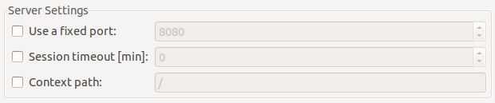
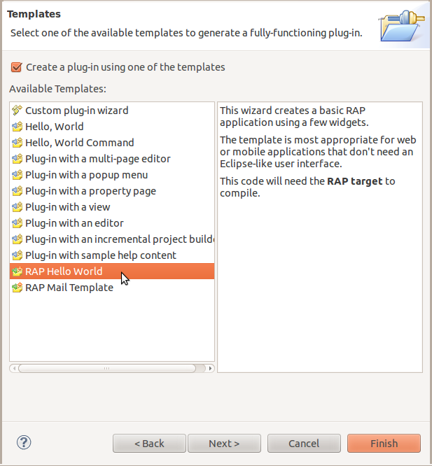

With RAP 2.0, it's becoming a lot easier to write custom widgets or other add-ons for RAP. We've published a new Java API to synchronize server-side objects with their related objects on the client. This API is built on the new RAP protocol and it lets you send updates directly to the client (and receive updates from the client in turn) without diving too deep into RAP's internals. In particular, you don't have to write any so-called LifeCycleAdapters (LCAs) anymore.
The central interface, called RemoteObject, is used to communicate with the client-side counterpart of an object, the remote object. First you need to create this object, then you can start sending updates to it by simply calling the remote object's set, call, etc. methods.
The following snippet shows how to create a remote object of the type example.CoffeeMachine and set the property sugar to the value false. That's all there is to do to send a create operation to the client with the initial property included.
Connection connection = RWT.getUISession().getConnection(); RemoteObject remoteObject = connection.createRemoteObject( "example.CoffeeMachine" ); remoteObject.set( "sugar", false );
To receive updates from the client, you have to add an operation handler to the remote object. This operation handler has handle… methods for all relevant protocol operations.
remoteObject.setHandler( new AbstractOperationHandler() {
@Override
public void handleNotify( String event, Map<String, Object> properties ) {
// react on the event, notify listeners ...
}
} );
The new API lives in the package org.eclipse.rap.rwt.remote. It's still considered provisional, but already used by a couple of widgets and services in RAP itself. It's expected to evolve over the next release, but we don't expect big changes.
For the first time ever, RAP provides public JavaScript API. There's now an object named rap in the global namespace of the JavaScript client. All methods contained in this object are documented in the RAP API reference together with their return types. The most important methods are registerTypeHandler and getRemoteObject.
This API can also be used in JavaScript code added by the JavaScriptLoader, the JavaScriptExecutor, or the ClientScripting add-on.
A type handler defines how protocol messages for a specific type should be handled. At minimum it defines a factory function that is used to create an object of this type when the server sends a create operation. It can also define the name of a destructor function, and a list of supported properties, events and methods. A typical type handler might look like this:
rap.registerTypeHandler( "example.CoffeeMachine", {
factory : function( properties ) {
return new CoffeeMachine( properties );
},
destructor : "dispose",
properties : [ "sugar", "power" ],
events : [ "Ready" ]
} );
The created object is stored by the framework under its object id. This object has to implement setter methods that match the properties defined in the handler, which will then be called when the server sends a set operation for a given property.
Just like the server, the client provides a RemoteObject that represents the server-side counterpart of a client object. It has a very similar API, with set, call and notify methods. If, for example, the custom widget wishes to inform the server that the value of the property text changed, it could look like this:
var remoteObject = rap.getRemoteObject( this ); remoteObject.set( "text", this.getText() ); remoteObject.notify( "Modify" );
To reduce the code required to implement an EntryPoint, we provide an abstract base class called AbstractEntryPoint with a skeletal implementation of the interface. It creates a display and a main shell and starts the SWT event loop when in SWT mode–you don't have to care for these things anymore.
We recommend to use this base class for all entrypoints rather than implementing the interface itself. The following code snippet shows a minimal but complete entry point:
public class HelloEntryPoint extends AbstractEntryPoint {
@Override
protected void createContents( Composite parent ) {
parent.setLayout( new GridLayout() );
Button button = new Button( parent, SWT.PUSH );
button.setText( "Hello World!" );
}
}
The main shell is full-screen by default, but this can be changed by overriding another method, createShell().
The RWT Launcher has got new options to configure the session timeout and the context path, just like the RAP Launcher.

For lightweight RAP applications, we recommend to implement an EntryPoint and an ApplicationConfiguration instead of using the Workbench and its extension points. To get you started quickly with a minimal application, we added a new very basic Hello World template to the RAP Tools. This template uses declarative services to register an ApplicationConfiguration. It replaces two old Eclipse Workbench-based templates.
The popular Mail template remains as an example for an application that uses the Workbench stack, IApplication, advisors, views and a perspective, etc.
